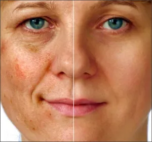

What Lumecca treats
- Age spots (brown and red pigment)
- Sun damage
- Freckles
- Rosacea redness
- Spider veins and small vessels
- Uneven texture
Lumecca puts about 40% of its energy into the 500–600 nm range, the sweet spot for both pigment and blood, compared with 10–15% for standard IPL. That is why it often needs one or two treatments where older devices needed four to six. A sapphire cooling tip keeps it comfortable.
During and after
You will see a bright flash and feel something like a light elastic snap. Redness and warmth afterwards are normal and usually fade within an hour. Over the next 24–48 hours brown spots darken, then flake off during the following week, leaving a more even tone. Treated small veins may blanch and disappear, or change colour and fade over a few days.
Before your session
Avoid direct, heavy sun and tanning for one month before treatment, and protect your skin from the sun afterwards while it is more sensitive.
Results

Beauty Medical Clinic clients. Individual results vary.
I would definitely recommend Lumecca. I like how it brightened my face and gave me a beautiful glow. I can really see a difference.
Lumecca photofacial FAQ
How many Lumecca sessions will I need?
Most people need one to three. Improvement shows after the first; more sessions give a better final result, depending on your skin type and how much damage there is.
When will I see results?
Sun damage and tone improve within days of the first session, with the most visible change at one to two weeks. Vein results show within about two weeks.
Are there side effects?
Most people have none beyond brief redness. Skin can be more sun-sensitive just after treatment, so avoid direct sun and tanning.
This page is general information, not medical advice. Your suitability for any treatment is confirmed at a consultation with Victoria Adamov, RN.